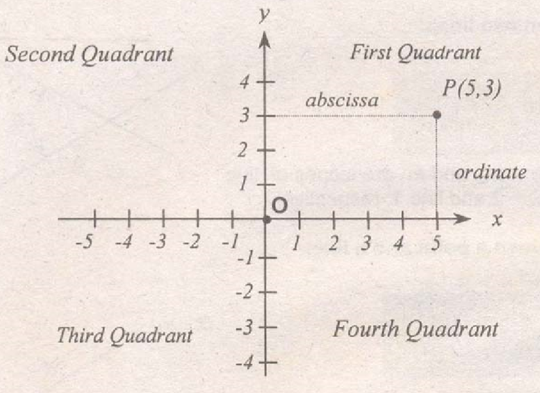
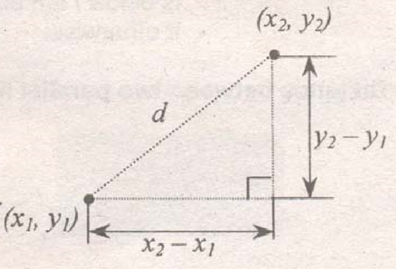
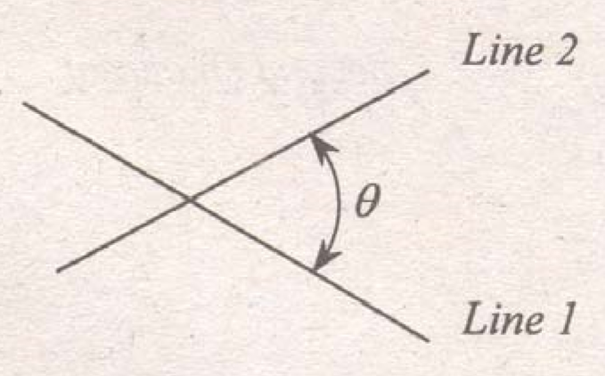

Analytic geometry deals with geometric problems using coordinates system thereby converting it into algebraic problems.
Rene Descartes (1596-1650, Cartesius in Latin language) is regarded as the founder of analytic geometry by introducing coordinates system in 1637.
Rectangular Coordinates System (Also known as Cartesian Coordinates System)

Point O is the origin and has coordinates (0, 0). The x-coordinate or abscissa is always measured from the y-axis while the y-coordinate or ordinate is always measured from the x-axis. The point P has 5 and 3 as abscissa and ordinate, respectively.
Distance between two points:

$$d = \sqrt {{{\left( {{x_2} - {x_1}} \right)}^2} + {{\left( {{y_2} - {y_1}} \right)}^2}} $$
This formula is known as the distance formula.
Distance between two points in space:
In space, there are three axes, namely x, y and z.
$$d = \sqrt {{{\left( {{x_2} - {x_1}} \right)}^2} + {{\left( {{y_2} - {y_1}} \right)}^2} + {{\left( {{z_2} - {z_1}} \right)}^2}} $$
Slope of a line (m):
$$\tan \theta = {{{y_2} - {y_1}} \over {{x_2} - {x_1}}}$$
$$\text{Since slope, }m=\tan \theta \ ,\ \therefore \ m = {{{y_2} - {y_1}} \over {{x_2} - {x_1}}}$$
For parallel lines, $m_1=m_2$
For perpendicular lines, ${m_2} = - {1 \over {{m_1}}}$
Angle between two lines:

$$\tan \theta = {{{m_2} - {m_1}} \over {1 + {m_2}{m_1}}}$$
where: m2 and m1 are slopes of the line 2 and line 1, respectively.
Distance between a point and a line:

$$d = {{A{x_1} + B{y_1} + C} \over { \pm \sqrt {{A^2} + {B^2}} }}$$
Use:
+ if B is positive and the point is above / right of the line.
+ if B is negative and the point is below / left of the line.
- if otherwise
Distance between two parallel lines:

$$d = {{{C_1} - {C_2}} \over { \pm \sqrt {{A^2} + {B^2}} }}$$
Division of line segment:
Let r1 and r2 be the corresponding ratio of its length to the total distance between two points.

$$\eqalign{
& x = {{({x_1}{r_2}) + ({x_2}{r_1})} \over {{r_1} + {r_2}}} \cr
& y = {{({y_1}{r_2}) + ({y_2}{r_1})} \over {{r_1} + {r_2}}} \cr} $$
If the point P(x, y) is at the midpoint of P1 and P2, then
$$x = {{{x_1} + {x_2}} \over 2}\ \ \ \ \ \text{and}\ \ \ \ \ y = {{{y_2} + {y_1}} \over 2}$$
Area by coordinates:
Consider a polygon with coordinates of the vertices given as shown.

$$A = {1 \over 2}\left[ {\left( {{x_1}{y_2} + {x_2}{y_3} + {x_3}{y_1}} \right) - \left( {{y_1}{x_2} + {y_2}{x_3} + {y_3}{x_1}} \right)} \right]$$

Equations of Line:
General Equation: $Ax + By + C = 0$
Point-Slope Form: $y - {y_1} = m(x - {x_1})$
Slope-Intercept Form: $y = mx + b$
Two-Point Form: $y - {y_1} = {{{y_2} - {y_1}} \over {{x_2} - {x_1}}}(x - {x_1})$
Intercept Form: ${x \over a} + {y \over b} = 1$
Conic section (or simply Conic) is the locus of a point which moves so that its distance from a fixed point (focus) is in constant ratio, e (eccentricity) to its distance from a fixed straight line (directrix).
The term "conic" was first introduced by a renowned mathematician and astronomer of antiquity, Apollonius (c.255-170 B.C.) Also, the term "conic section" was due to the fact that the section is formed by a plane made to intersect a cone

Circle is produced when the cutting plane is parallel to the base of the cone.
Ellipse is produced when the cutting plane is not parallel (or inclined) to the base of the cone.
Parabola is produced when the cutting plane is parallel to the element (or generatrix) of the cone.
Hyperbola is produced when the cutting plane is parallel to the axis of the cone.
General Equation of a Conic Section:
$$A{x^2} + Bxy + C{y^2} + Dx + Ey + F = 0$$
When B is not equal to zero, then the principal axes of the conic are inclined (not parallel to the coordinates axes). The curve can be identified from the equation given by determining the value of the determinant, ${B^2}-4AC$.
If ${B^2}-4AC < 0$, the conic is an ellipse. $ \to e < 1.0$
If ${B^2}-4AC = 0$, the conic is a parabola. $ \to e = 1.0$
If ${B^2}-4AC > 0$, the conic is a hyperbola. $ \to e > 1.0$
When B is equal to zero, then the principal axes of the conic are parallel to the coordinates axes (x and y axes). To identify the curve, compare the coefficients of A and C.
If $A = C$, the conic is a circle.
If $A \ne C$ but the same signs, the conic is an ellipse.
If A and C have different signs, the conic is a hyperbola.
If either A or C is zero, the conic is a parabola.
The conic sections have geometric properties that can be used for some engineering application such as beams of sound and reflection of rays of light.
Circle reflects rays issued from the focus back to the center of the circle.
Parabola reflects rays issued from the focus as a parallel (with respect to its axis) outgoing beam.
Ellipse reflects rays issued from the focus into the other focus.
Hyperbola reflects rays issued from the focus as if coming from the other focus.

Circle is a locus of a point that which moves so that it is equidistant from a fixed point called center.
General Equation:
$${x^2} + {y^2} + Dx + Ey + F = 0$$
If D & E = 0, center is at the origin (0, 0). If either D or E, of both D & E $\ne 0$, the center is at (h, k).
Standard Equations:
C(0, 0)

$${x^2} + {y^2} = {r^2}$$
C(h, k)

$${(x - h)^2} + {(y - k)^2} = {r^2}$$
When the equation given is general equation rather than standard equation, the center (h, k) of the circle and its radius (r) can be determine by converting the general equation to standard using the process known as completing the square. Or using the following formulas:
General equation: $A{x^2} + C{y^2} + Dx + Ey + F = 0$
Center (h, k): $\eqalign{
& h = {{ - D} \over {2A}} \cr
& k = {{ - E} \over {2A}} \cr} $
Radius (r): $r = \sqrt {{{{D^2} + {E^2} - 4AF} \over {4{A^2}}}} $
Slope of line - is defined as ${\text{rise} \over \text{run}} = {{\Delta y} \over {\Delta x}} = {{{y_2} - {y_1}} \over {{x_2} - {x_1}}}$
$\Delta $ denotes an increment. When the line is parallel to the x-axis, the slope = 0. And if the line is parallel to the y-axis, its slope = $\infty $.